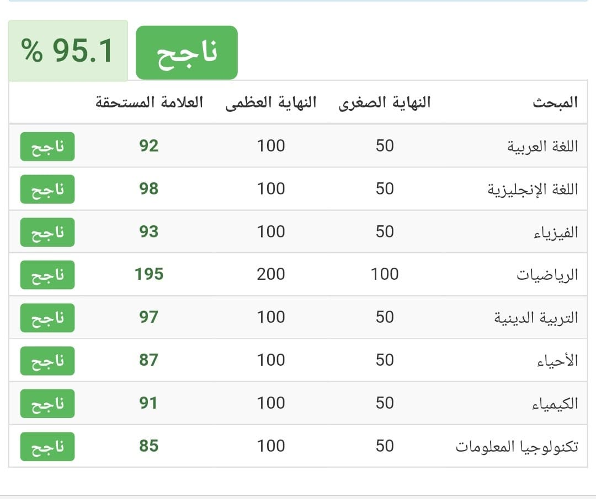

عثمان غالب عثمان كتوت, طالب هندسة حاسوب في جامعة بيرزيت في السنة الرابعة, لديه شغف في تعلم اشياء جديدة, فعلى سبيل المثال يقوم حاليا عثمان بتعلم سبل وطرق تطوير الويب, حيث انه قد بدا بتعلم الفرونت اند مع كوتش رائعة جدا وهي الكوتش منار. بس يا ترى كيف بلشت قصته ؟

التوجيهي كان اول تحدي في حياته, كان داخل عليه وهو خايف ومتوتر, خايف انه يَفَشَّل الناس الي بحبوه, خايف انه يخسر ثقته في نفسه, كان يشوف ناس بتحكي انا درست وما جبت وهاد الاشي كان عامله قلق كبير, هاد الخوف كان يخلي عثمان يدرس كثير وكثير, كان كل يوم يروح ويبلش يدرس, تخيلوا انه حل فوق ال 1000 سؤال رياضيات خلال السنه, يمسك دوسية وخلال كم يوم يحطها مع خواتها الي خلص عليهم من قبل, وهاد الاشي كان مع كل المواد مش بس الرياضيات, اضطر عثمان للاعتماد على التعليم الذاتي بعد ما اعلنوا الاساتذة عن اضراب لمدة فصل كامل, وقتها صار عثمان يدرس من الدوسيات و الكتب لحاله بعد كل هاد وصل عثمان بنهاية السنة لحاله تسمى بالاحتراق النفسي وهي حاله بكون ما في طعم فيها للحياة, وبتنتج عن الضغط المتواصل والتعب الشديد لفترات طويلة وما بتعرف ممكن لساته لليوم هيك.